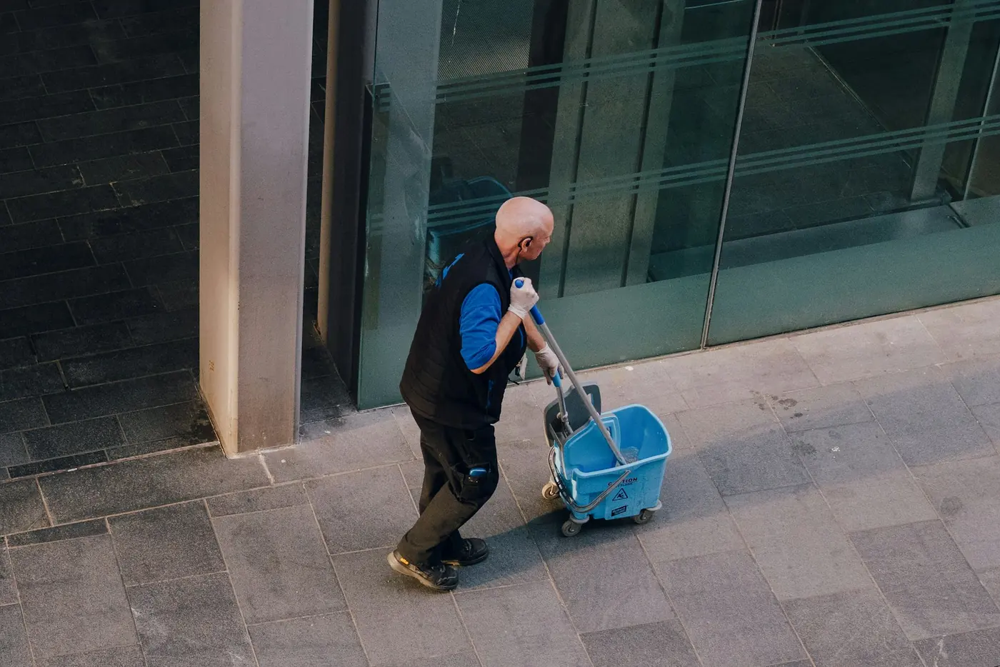

Leistung im Raum Heilbronn
Hausmeisterservice
ALH Hausmeisterservice übernimmt die laufende Betreuung von Wohn- und Gewerbeobjekten in Oedheim, Heilbronn, Neckarsulm und Umgebung. Dazu gehören Kontrollgänge, Ordnung im Objekt, kleinere organisatorische Aufgaben und ein verlässlicher Blick auf Sauberkeit und Werterhalt.
Ablauf
- Objekt und Bedarf vor Ort oder telefonisch klären
- Leistungsumfang und sinnvolle Intervalle festlegen
- Arbeiten planbar, sauber und persönlich ausführen
Vorteile
- Entlastung für Eigentümer und Hausverwaltungen
- Ein Ansprechpartner für viele Aufgaben
- Gepflegter Eindruck für Bewohner, Kunden und Besucher
Einsatzgebiet: Geeignet für Mehrfamilienhäuser, Gewerbeobjekte, Praxen und kleinere Liegenschaften im Raum Heilbronn.